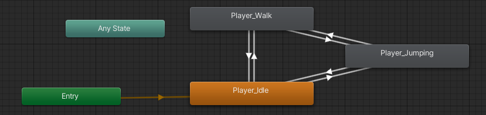
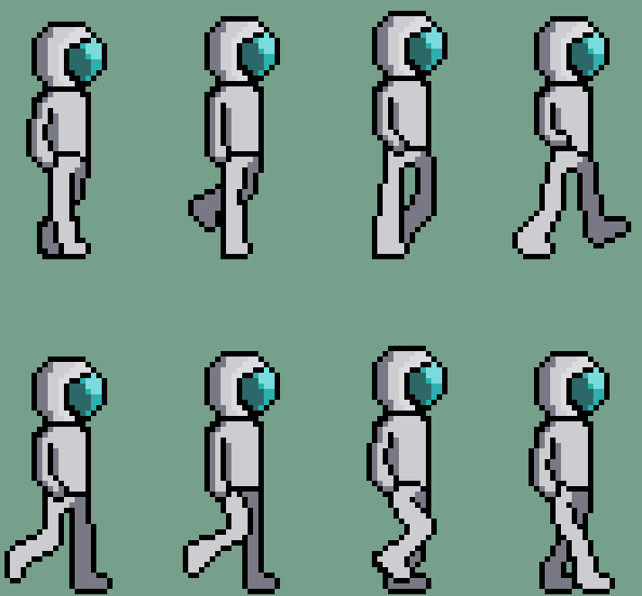

Detail Description Part One
Aim
The main aim of the game p roject is to create “Interaction and Exploration”. So, we will break it into two goals that will eventually correspond with each other.
When it comes to interaction, we want the player (or you, the person in control) to be able to respond to objects, living beings, mechanics etc, which may or may not influence their actions and as such we want to create as many interactions as possible for the player.
For the exploration part, both you and the player will have the interest to explore new areas or to learn something new in general, so to do that will mean that we need to create interactions that can lead to a better experience for you and the player.
Plans and Progress
The game project, having an initial goal of creating exploration and interaction requires that we need a base game that can function first. So as followed:
- Creating a spreadsheet sprite for a playable character such as movement, jumping and other animations.
This can be stated as completed, however there can also be more animations the character can have. Although we found the number of sprites we had for the playable character was suitable for the current demo.
- Create a background music for the first stage that gives an atmosphere of being alone in an abandoned building or to be exact, the ruined lab stage. This was completed by Dave who compose the music in LMMS.
- Create a script using tutorials online such as Unity Documentation and video guides to make the character move and jump as well as implementing the animation to give life to the character
While making the game, I have to watch many tutorials on making a 2D Unity game. I learned that Unity involves a lot of Object-Oriented programming when it comes to inputting fields, methods and creating object from a blueprint (class). There was a lot of learning involve towards making a script such as making the character move or jump as well as making the player facing the other direction.
In the end, I was able to make the character move and jump. The character was also animated thanks to a component called “Animator” which allows me to add animations based on parameters that are put into the script. These parameters allowed me to give conditions that are set in the script such as the character must be on contact with the ground to jump again.
With the “Animator” Component, we can also put restrictions or conditions to prevent multiple animations from happening at the same time. These are represented by the transitions arrows below which sets the conditions such as the player can only go into the walking animation if on contact with the ground.
- When developing these sprites, I had to consider what makes the character movement’s feel more realistic, so I looked at a lot of 2D Pixel that tries to represent character movement in small details.
While animations are tough to do since there is a lot of sprites to create, this allowed the characters to feel more alive since we can show every single movement the character does.
- In the project we wanted to develop interactable features such as picking up an item that you can use for many purposes, however we were not able to complete it within the timeframe given, as such it was scrapped from the demo, but we are planning to make a feature like it near the future if given the chance.
- The game was only at a testing phase but cannot be considered a demo that could be shown to the public as we felt there was a lack of content to make the audience feel satisfied or anticipated. This is because what we currently have is still just a testing phrase of the game.
Roles
There will be four people working on the game project, as followed:
Kelvin Tran
- Game Designer who will direct all ideas and plan out the whole structure of the game project while leading the team.
- Programmer who will write all the code to make the game come to life.
- Art Designer
- Sound FX
Alex Strates
Sprite Designer (Main Role)
Music Composer (Sub Role)
Kemal Dogru
Sprite Designer (Main Role)
Yicheng Lu
Music Composer (Main Role)
Scopes and Limits
While developing the game project with my group members, we have realised that there are a lot of features and playability that we want to add to the core of the game, however due to the timeframe, we have to limit what features we wanted to show. Such as featuring multiple areas beyond the first area or giving non-playable characters side quests or objectives that you can complete besides exploring the game.
Tools and Technologies
The tools we used in making this video game project, were:
- Unity Hub Ver. 2020.3.9f1
- LMMS Public Ver. 1.2.2 for the music
- GraphicsGale and Piskel for the sprites and other images.
- Desktop PC (Windows 10) to use these softwares.